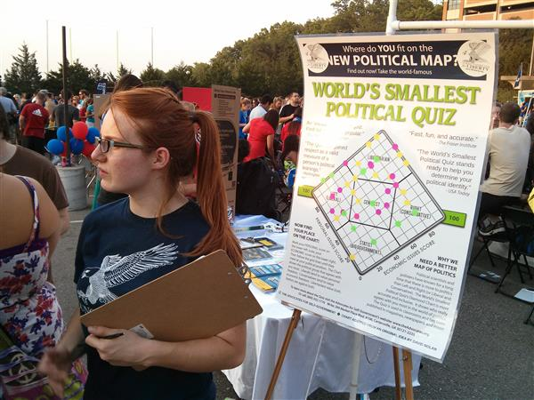
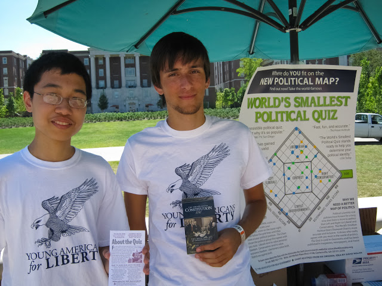

Image courtesy Julianna Orsay
Teaching about liberty
At Wash. U., we're surrounded by classmates who are naturally drawn to 'economically conservative' and 'socially liberal' policies, though many may not realize this makes them libertarian. We seek to get the word out—to educate people about libertarianism—starting with 'the world's smallest political quiz,' which we administer on campus. Developed by libertarian David Noland, the 10-question inventory identifies your political leaning in just a few short questions. We're excited to report there's a growing contengency of liberty-minded students at Wash. U. that find themselves disinfranchized by politics at the present. YAL gives an alternate perspective.

Image courtesy Julianna Orsay
Following the Constitution
Violations of our liberty abound: NSA Spying, SOPA/PIPA Internet Restriciton, 'Net-Neutrality', Arming the Rebels, USA Patriot Act, militarized police, senseless killings.
The Constitution emphatically restricts these activities, and our group publicizes this. We distribute Constitutions on campus so students can read for themselves the unconstitutionality of today's most controversial government programs. In an era where government perpetually seeks to expand its shadow, Wash. U. YAL puts the focus back on constitutional safeguards as a source of preserving our liberty.